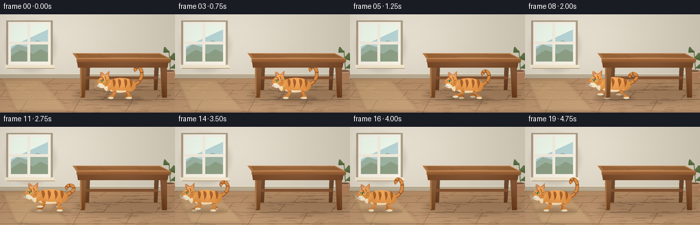
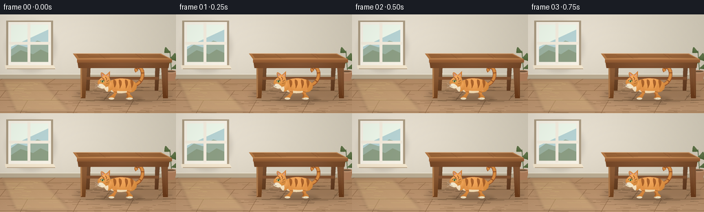

CODING AGENTS AS PIXEL WORLD MODELS
traex/GPT-6.1-Sol · dynamic_spatial_relationship_0015
点击播放 · 原生 RGB 像素
逐轮保存的候选
回放视频、检查图与代码变化。
每份候选均可单独播放。实际图片检查记录在下方工具轨迹中。
候选 01播放与检查图
点击播放 · 原生 RGB 像素


展开代码变化
--- 上一保存版本
+++ 本次保存版本
@@ -0,0 +1,218 @@
+from pathlib import Path
+import json, math
+import numpy as np
+from PIL import Image, ImageDraw, ImageFilter
+import artifact_io
+
+ROOT = Path(__file__).resolve().parent
+SPEC = json.loads((ROOT/'task_spec.json').read_text())
+W,H = SPEC['width'], SPEC['height']
+S=4
+rng=np.random.default_rng(29)
+
+def xy(points): return [(int(x*S),int(y*S)) for x,y in points]
+def poly(im, points, color): ImageDraw.Draw(im).polygon(xy(points),fill=color)
+def line(im,points,color,width=1): ImageDraw.Draw(im).line(xy(points), fill=color,width=max(1,round(width*S)),joint='curve')
+def ellipse(im, box, color): ImageDraw.Draw(im).ellipse(tuple(round(a*S) for a in box), fill=color)
+def path(points, steps=18):
+ out=[points[0]]
+ for i in range(1,len(points),3):
+ a=np.array(out[-1]); b,c,d=[np.array(q) for q in points[i:i+3]]
+ for t in np.linspace(0,1,steps+1)[1:]: out.append(tuple((1-t)**3*a+3*(1-t)**2*t*b+3*(1-t)*t*t*c+t**3*d))
+ return out
+
+def shaded_shape(im, pts, base, light=20, center=None):
+ mask=Image.new('L',im.size,0); ImageDraw.Draw(mask).polygon(xy(pts),fill=255)
+ x0,y0,x1,y1=mask.getbbox() or (0,0,1,1)
+ yy,xx=np.mgrid[y0:y1,x0:x1]
+ if center is None: center=((x0+x1)/(2*S),y0/S+(y1-y0)*.25/S)
+ radius=max((x1-x0)/S,(y1-y0)/S)*.75
+ glow=np.exp(-(((xx/S-center[0])/radius)**2+((yy/S-center[1])/radius)**2)*2)
+ shade=(glow-.42)*light-(yy-y0)/max(1,y1-y0)*light*.23
+ rgb=np.stack([np.clip(b+shade,0,255) for b in base],axis=-1).astype('uint8')
+ im.paste(Image.fromarray(rgb),(x0,y0),mask.crop((x0,y0,x1,y1)))
+
+def shadow(im,box,opacity=35,blur=2):
+ layer=Image.new('RGBA',im.size); ellipse(layer,box,(52,35,21,opacity))
+ im.alpha_composite(layer.filter(ImageFilter.GaussianBlur(blur*S)))
+
+# Warm, softly lit interior; all texture is fixed over time.
+yy,xx=np.mgrid[0:H*S,0:W*S]; X=xx/S; Y=yy/S
+wall=np.empty((H*S,W*S,3),dtype=np.float32)
+light=np.exp(-((X-50)/126)**2-((Y-31)/98)**2)
+for k,b in enumerate((213,205,187)): wall[:,:,k]=b+light*(23 if k<2 else 26)-Y*.075
+floor=Y>=91
+for k,b in enumerate((166,126,89)): wall[:,:,k]=np.where(floor,b+(Y-91)*.5+light*16,wall[:,:,k])
+noise=rng.normal(0,.42,(H*S,W*S,1)); wall=np.clip(wall+noise,0,255).astype('uint8')
+BG=Image.fromarray(wall).convert('RGBA')
+# Baseboard, room depth, and plank seams.
+poly(BG,[(0,87),(256,87),(256,94),(0,94)],'#b8aa91')
+line(BG,[(0,87),(256,87)],'#e9e1ce',1.1)
+line(BG,[(0,94),(256,94)],'#9c856a',.65)
+for y in [101,111,125,142]:
+ line(BG,[(0,y),(256,y)],(135,98,64,125),.4)
+ line(BG,[(0,y+.65),(256,y+.65)],(204,168,124,110),.3)
+for y0,y1,offset in [(94,101,3),(101,111,30),(111,125,8),(125,144,40)]:
+ for x in range(offset,270,77): line(BG,[(x,y0),(x-11,y1)],(139,101,67,100),.45)
+for i in range(115):
+ x=rng.uniform(0,256); y=rng.uniform(96,144); leng=rng.uniform(4,24)
+ line(BG,[(x,y),(min(256,x+leng),y+.18)],(133,96,62,20),.25)
+# Window with a quiet landscape.
+shadow(BG,(9,10,81,84),30,3)
+poly(BG,[(9,9),(77,9),(77,78),(9,78)],'#ac9c83')
+poly(BG,[(12,11),(74,11),(74,74),(12,74)],'#f8f3e7')
+poly(BG,[(16,15),(70,15),(70,69),(16,69)],'#b8d5d6')
+poly(BG,[(16,51),(26,44),(39,48),(54,38),(70,43),(70,69),(16,69)],'#9eb4a3')
+poly(BG,[(16,61),(30,52),(48,58),(59,51),(70,56),(70,69),(16,69)],'#8d9f85')
+poly(BG,[(16,15),(70,15),(70,22),(16,47)],(239,249,236,45))
+poly(BG,[(40,12),(44,12),(44,72),(40,72)],'#f6eee0')
+poly(BG,[(13,40),(73,40),(73,44),(13,44)],'#f4edde')
+poly(BG,[(7,74),(78,74),(81,79),(8,79)],'#f3e6ce')
+line(BG,[(10,79),(80,79)],'#b29c7f',1)
+# Soft oblique patch of sunlight on the floor.
+sun=Image.new('RGBA',BG.size)
+poly(sun,[(3,96),(60,96),(101,141),(23,141)],(255,227,158,32))
+BG.alpha_composite(sun.filter(ImageFilter.GaussianBlur(2*S)))
+# A small background plant, away from the action.
+line(BG,[(250,91),(247,53)],'#657451',1.2)
+for p in [((248,71),(236,60),(237,73)),((247,65),(256,53),(256,68)),((248,56),(240,45),(239,56)),((249,79),(258,70),(259,80))]:
+ a,b,c=p
+ pts=path([a,b,b,c,c,a,a])
+ shaded_shape(BG,pts,(89,110,66),20)
+poly(BG,[(239,83),(257,83),(254,97),(242,97)],'#b07f5c')
+ellipse(BG,(239,81,257,86),'#bf9270'); ellipse(BG,(241,82,255,84),'#70543b')
+
+# Solid walnut table, positioned entirely to the right of the cat's destination.
+def table_back(im):
+ shadow(im,(108,106,252,130),45,4)
+ # Rear legs and stretcher.
+ shaded_shape(im,[(125,65),(132,65),(130,111),(125,111)],(105,67,39),17)
+ shaded_shape(im,[(226,65),(233,65),(230,111),(225,111)],(103,64,38),16)
+ poly(im,[(126,91),(231,91),(230,95),(126,95)],'#815130')
+
+def table_front(im):
+ # Front legs taper and have highlights on their outside edges.
+ shaded_shape(im,[(117,69),(127,69),(124,122),(117,122)],(125,78,42),25)
+ poly(im,[(117,70),(119,70),(119,120),(117,122)],'#aa7749')
+ shaded_shape(im,[(234,69),(244,69),(244,122),(237,122)],(117,70,38),26)
+ line(im,[(240,74),(242,118)],'#89572f',.45)
+ line(im,[(120,76),(121,116)],'#89572f',.35)
+ # Apron under tabletop.
+ shaded_shape(im,[(112,65),(247,65),(245,78),(114,78)],(119,74,42),22)
+ line(im,[(115,76),(244,76)],'#77472a',.6)
+ # Broad perspective tabletop.
+ shaded_shape(im,[(106,57),(234,57),(250,65),(112,65)],(178,120,70),33)
+ poly(im,[(112,65),(250,65),(250,70),(112,70)],'#9a6137')
+ line(im,[(107,57),(234,57),(249,65)],'#d0a074',.75)
+ line(im,[(112,65),(249,65)],'#cc9560',.85)
+ line(im,[(114,69),(249,69)],'#744725',.55)
+ # Subtle grain across the top, following perspective.
+ for i in range(12):
+ y=58+i*.48; left=106+(y-57)*.75; right=234+(y-57)*2
+ pts=[(left+4,y),(145,y+.12),(175,y-.12),(min(right-3,246),y+.1)]
+ line(im,pts,(121,74,39,65),.22)
+ for x in (144,197): line(im,[(x,57.5),(x+9,64.3)],(113,69,39,75),.32)
+
+# Cat geometry is drawn in local coordinates: left-facing, expressive tabby.
+def draw_cat(im,cx,ground,phase,run,settle):
+ bob=(-1.7*math.cos(phase*2) if run else -.25*math.sin(phase))
+ by=ground-18+bob
+ stretch=1+.10*run*math.cos(phase*2)
+ def P(p): return (cx+p[0]*stretch,by+p[1])
+ def pts(ps): return [P(p) for p in ps]
+ def shape(ps,color,light=26): shaded_shape(im,pts(path(ps)),color,light)
+ def ln(ps,c,w=.8): line(im,pts(ps),c,w)
+ def ell(b,c): ellipse(im,(cx+b[0]*stretch,by+b[1],cx+b[2]*stretch,by+b[3]),c)
+ # Tail: raised hook initially, flowing behind during the run.
+ tt=run
+ tail=path([(16,0),(30,-1-3*tt),(35,-17+5*tt),(29,-25+9*tt),
+ (25,-30+12*tt),(20,-24+11*tt),(23,-21+9*tt)])
+ tail=[(x,y+math.sin(phase)*1.8*tt) for x,y in tail]
+ line(im,pts(tail),'#9c5326',5.2)
+ line(im,pts([(x,y-.4) for x,y in tail]),'#d98d42',3.8)
+ for n in [7,14,22,29]:
+ if n<len(tail):
+ p=np.array(tail[n]); tangent=np.array(tail[min(len(tail)-1,n+1)])-np.array(tail[max(0,n-1)])
+ normal=np.array([-tangent[1],tangent[0]])/(np.linalg.norm(tangent)+1e-4)*1.8
+ ln([tuple(p-normal),tuple(p+normal)],'#935328',1.5)
+ # Articulated legs, with staggered far/near stride and compact paws.
+ def leg(hipx,ph,front,far):
+ stride=math.sin(ph)*run
+ lift=max(0,math.cos(ph))*run
+ footx=hipx+stride*(11 if front else 10)
+ footy=18-bob-5.8*lift
+ knee=(hipx+(4 if front else -4)-stride*3,8.5-lift*1.2)
+ col=(179,106,47) if far else (217,137,62)
+ shape([(hipx-3,0),(hipx+3,0),(knee[0]+3,knee[1]-2),(knee[0]+2,knee[1]+2),
+ (knee[0]+1,knee[1]+5),(footx+3,footy-3),(footx+2,footy),
+ (footx+1,footy+2),(footx-5,footy+2),(footx-6,footy),
+ (footx-6,footy-2),(footx-2,footy-2),(knee[0]-2,knee[1]+2),
+ (knee[0]-4,knee[1]-1),(hipx-3,4),(hipx-3,0)],col,24)
+ ell((footx-6,footy-1,footx+2,footy+2),'#eee0c0' if not far else '#c4b294')
+ if not far:
+ ln([(knee[0]-2,knee[1]),(knee[0]+2,knee[1]+1)],'#a7652f',1)
+ ln([(footx-3,footy+.2),(footx-3,footy+1.3)],'#ae967b',.35)
+ leg(13,phase+math.pi,False,True);leg(-12,phase,True,True)
+ # Main body, shoulders and softly highlighted rump.
+ shape([(-18,-5),(-10,-13),(11,-12),(19,-6),(25,-2),(24,6),(17,9),
+ (10,11),(-7,11),(-16,6),(-20,3),(-21,-1),(-18,-5)],(223,146,69),43)
+ shape([(-13,5),(-6,9),(8,8),(15,7),(9,12),(-9,12),(-15,8),(-16,7),(-15,6),(-13,5)],(237,212,171),16)
+ # Curving body stripes, tapered at their lower tips.
+ for x in [-9,-1,8,16]:
+ shape([(x-2,-9),(x+2,-9),(x+3,-4),(x+1,0),
+ (x,3),(x-1,4),(x-1,4),(x,-1),(x-3,-3),(x-2,-9)],(165,93,38),14)
+ leg(15,phase,False,False);leg(-12,phase+math.pi,True,False)
+ # Neck and head.
+ shape([(-18,-7),(-26,-9),(-29,-2),(-24,5),(-20,11),(-14,8),(-12,4),
+ (-12,-1),(-13,-5),(-18,-7)],(230,154,77),29)
+ shape([(-24,-4),(-25,1),(-25,6),(-20,9),(-17,6),(-18,0),(-24,-4)],(244,224,190),15)
+ # Pointed ears behind the face.
+ shape([(-28,-12),(-31,-20),(-29,-22),(-23,-16),(-20,-16),(-18,-20),(-16,-21),
+ (-16,-17),(-16,-11),(-20,-8),(-24,-8),(-27,-9),(-28,-12)],(208,128,57),28)
+ poly(im,pts([(-29,-19),(-27,-13),(-23,-14)]),'#cc9786')
+ poly(im,pts([(-18,-18),(-18,-12),(-21,-14)]),'#d7a491')
+ shape([(-25,-15),(-19,-16),(-15,-12),(-16,-6),(-16,-1),(-20,3),(-25,2),
+ (-30,3),(-34,-1),(-34,-5),(-34,-8),(-29,-11),(-25,-15)],(228,152,75),38)
+ # Forehead tabby markings.
+ ln([(-28,-12),(-25,-10),(-25,-7)],'#9d5b2b',1.15)
+ ln([(-23,-13),(-21,-10),(-22,-8)],'#9d5b2b',1)
+ ln([(-18,-8),(-21,-6)],'#a66631',1.15)
+ ln([(-18,-4),(-22,-3)],'#a66631',.9)
+ # Cream muzzle and clear green near eye.
+ ell((-34,-3,-25,3),'#f3e6c8')
+ ell((-31,-1,-23,4),'#f4e5c7')
+ shape([(-30,-7),(-28,-9),(-25,-9),(-24,-7),(-25,-5),(-28,-5),(-30,-7)],(85,74,43),6)
+ ell((-29,-8,-25,-5),'#afbe64')
+ ell((-27.8,-8,-26.6,-5),'#293329')
+ ell((-28.4,-7.9,-27.6,-7.1),'#f9f9de')
+ poly(im,pts([(-34,-2),(-31.6,-1.5),(-33.4,.1)]),'#9e6860')
+ ln([(-33,.1),(-32,1.4),(-29.8,1.5)],'#7f634a',.45)
+ for endy in [-3,0,3]: ln([(-29,0),(-38,endy)],(242,237,217,200),.35)
+ ln([(-23,1),(-17,2)],'#eadbc2',.3)
+
+frames=[]
+for f in range(SPEC['frames']):
+ # Initially sheltered beneath the tabletop. Smooth acceleration into a leftward run.
+ if f<=4:
+ cx=176; run=0.; phase=f*.45
+ elif f<=14:
+ u=(f-4)/10
+ ease=3*u*u-2*u*u*u
+ cx=176-131*ease
+ run=min(1.,(f-4)/2,(15-f)/2)
+ phase=(f-4)*2.25
+ else:
+ cx=45; run=0.; phase=(f-15)*.48
+ im=BG.copy()
+ table_back(im)
+ shadow(im,(cx-30,119,cx+31,127),44 if run else 51,2)
+ draw_cat(im,cx,122,phase,run,f>=15)
+ table_front(im)
+ # Restrained warm vignette, with crisp supersampled silhouettes.
+ rgb=np.asarray(im.convert('RGB'),dtype=np.float32)
+ vignette=1-.085*((X-130)/175)**2-.055*((Y-72)/110)**2
+ rgb=np.clip(rgb*vignette[:,:,None],0,255).astype('uint8')
+ final=Image.fromarray(rgb).resize((W,H),Image.Resampling.LANCZOS)
+ frames.append(np.asarray(final))
+artifact_io.save(np.stack(frames),ROOT)
+print(f'Saved {len(frames)} RGB frames, {W}x{H}, {SPEC["fps"]} fps.')
可观测工具轨迹
实际执行的命令与返回图片。
命令 1exit 0
/bin/bash -lc 'ls -la && cat prompt.txt && cat GENERATION_RULES.md && cat task_spec.json'
命令 2exit 0
/bin/bash -lc 'cat artifact_io.py'
命令 3exit 0
/bin/bash -lc "cat > generate.py <<'PY'
from pathlib import Path
import json, math
import numpy as np
from PIL import Image, ImageDraw, ImageFilter
import artifact_io
ROOT = Path(__file__).resolve().parent
SPEC = json.loads((ROOT/'task_spec.json').read_text())
W,H = SPEC['width'], SPEC['height']
S=4
rng=np.random.default_rng(29)
def xy(points): return [(int(x*S),int(y*S)) for x,y in points]
def poly(im, points, color): ImageDraw.Draw(im).polygon(xy(points),fill=color)
def line(im,points,color,width=1): ImageDraw.Draw(im).line(xy(points), fill=color,width=max(1,round(width*S)),joint='curve')
def ellipse(im, box, color): ImageDraw.Draw(im).ellipse(tuple(round(a*S) for a in box), fill=color)
def path(points, steps=18):
out=[points[0]]
for i in range(1,len(points),3):
a=np.array(out[-1]); b,c,d=[np.array(q) for q in points[i:i+3]]
for t in np.linspace(0,1,steps+1)[1:]: out.append(tuple((1-t)**3*a+3*(1-t)**2*t*b+3*(1-t)*t*t*c+t**3*d))
return out
def shaded_shape(im, pts, base, light=20, center=None):
mask=Image.new('L',im.size,0); ImageDraw.Draw(mask).polygon(xy(pts),fill=255)
x0,y0,x1,y1=mask.getbbox() or (0,0,1,1)
yy,xx=np.mgrid[y0:y1,x0:x1]
if center is None: center=((x0+x1)/(2*S),y0/S+(y1-y0)*.25/S)
radius=max((x1-x0)/S,(y1-y0)/S)*.75
glow=np.exp(-(((xx/S-center[0])/radius)**2+((yy/S-center[1])/radius)**2)*2)
shade=(glow-.42)*light-(yy-y0)/max(1,y1-y0)*light*.23
rgb=np.stack([np.clip(b+shade,0,255) for b in base],axis=-1).astype('uint8')
im.paste(Image.fromarray(rgb),(x0,y0),mask.crop((x0,y0,x1,y1)))
def shadow(im,box,opacity=35,blur=2):
layer=Image.new('RGBA',im.size); ellipse(layer,box,(52,35,21,opacity))
im.alpha_composite(layer.filter(ImageFilter.GaussianBlur(blur*S)))
# Warm, softly lit interior; all texture is fixed over time.
yy,xx=np.mgrid[0:H*S,0:W*S]; X=xx/S; Y=yy/S
wall=np.empty((H*S,W*S,3),dtype=np.float32)
light=np.exp(-((X-50)/126)**2-((Y-31)/98)**2)
for k,b in enumerate((213,205,187)): wall[:,:,k]=b+light*(23 if k<2 else 26)-Y*.075
floor=Y>=91
for k,b in enumerate((166,126,89)): wall[:,:,k]=np.where(floor,b+(Y-91)*.5+light*16,wall[:,:,k])
noise=rng.normal(0,.42,(H*S,W*S,1)); wall=np.clip(wall+noise,0,255).astype('uint8')
BG=Image.fromarray(wall).convert('RGBA')
# Baseboard, room depth, and plank seams.
poly(BG,[(0,87),(256,87),(256,94),(0,94)],'#b8aa91')
line(BG,[(0,87),(256,87)],'#e9e1ce',1.1)
line(BG,[(0,94),(256,94)],'#9c856a',.65)
for y in [101,111,125,142]:
line(BG,[(0,y),(256,y)],(135,98,64,125),.4)
line(BG,[(0,y+.65),(256,y+.65)],(204,168,124,110),.3)
for y0,y1,offset in [(94,101,3),(101,111,30),(111,125,8),(125,144,40)]:
for x in range(offset,270,77): line(BG,[(x,y0),(x-11,y1)],(139,101,67,100),.45)
for i in range(115):
x=rng.uniform(0,256); y=rng.uniform(96,144); leng=rng.uniform(4,24)
line(BG,[(x,y),(min(256,x+leng),y+.18)],(133,96,62,20),.25)
# Window with a quiet landscape.
shadow(BG,(9,10,81,84),30,3)
poly(BG,[(9,9),(77,9),(77,78),(9,78)],'#ac9c83')
poly(BG,[(12,11),(74,11),(74,74),(12,74)],'#f8f3e7')
poly(BG,[(16,15),(70,15),(70,69),(16,69)],'#b8d5d6')
poly(BG,[(16,51),(26,44),(39,48),(54,38),(70,43),(70,69),(16,69)],'#9eb4a3')
poly(BG,[(16,61),(30,52),(48,58),(59,51),(70,56),(70,69),(16,69)],'#8d9f85')
poly(BG,[(16,15),(70,15),(70,22),(16,47)],(239,249,236,45))
poly(BG,[(40,12),(44,12),(44,72),(40,72)],'#f6eee0')
poly(BG,[(13,40),(73,40),(73,44),(13,44)],'#f4edde')
poly(BG,[(7,74),(78,74),(81,79),(8,79)],'#f3e6ce')
line(BG,[(10,79),(80,79)],'#b29c7f',1)
# Soft oblique patch of sunlight on the floor.
sun=Image.new('RGBA',BG.size)
poly(sun,[(3,96),(60,96),(101,141),(23,141)],(255,227,158,32))
BG.alpha_composite(sun.filter(ImageFilter.GaussianBlur(2*S)))
# A small background plant, away from the action.
line(BG,[(250,91),(247,53)],'#657451',1.2)
for p in [((248,71),(236,60),(237,73)),((247,65),(256,53),(256,68)),((248,56),(240,45),(239,56)),((249,79),(258,70),(259,80))]:
a,b,c=p
pts=path([a,b,b,c,c,a,a])
shaded_shape(BG,pts,(89,110,66),20)
poly(BG,[(239,83),(257,83),(254,97),(242,97)],'#b07f5c')
ellipse(BG,(239,81,257,86),'#bf9270'); ellipse(BG,(241,82,255,84),'#70543b')
# Solid walnut table, positioned entirely to the right of the cat's destination.
def table_back(im):
shadow(im,(108,106,252,130),45,4)
# Rear legs and stretcher.
shaded_shape(im,[(125,65),(132,65),(130,111),(125,111)],(105,67,39),17)
shaded_shape(im,[(226,65),(233,65),(230,111),(225,111)],(103,64,38),16)
poly(im,[(126,91),(231,91),(230,95),(126,95)],'#815130')
def table_front(im):
# Front legs taper and have highlights on their outside edges.
shaded_shape(im,[(117,69),(127,69),(124,122),(117,122)],(125,78,42),25)
poly(im,[(117,70),(119,70),(119,120),(117,122)],'#aa7749')
shaded_shape(im,[(234,69),(244,69),(244,122),(237,122)],(117,70,38),26)
line(im,[(240,74),(242,118)],'#89572f',.45)
line(im,[(120,76),(121,116)],'#89572f',.35)
# Apron under tabletop.
shaded_shape(im,[(112,65),(247,65),(245,78),(114,78)],(119,74,42),22)
line(im,[(115,76),(244,76)],'#77472a',.6)
# Broad perspective tabletop.
shaded_shape(im,[(106,57),(234,57),(250,65),(112,65)],(178,120,70),33)
poly(im,[(112,65),(250,65),(250,70),(112,70)],'#9a6137')
line(im,[(107,57),(234,57),(249,65)],'#d0a074',.75)
line(im,[(112,65),(249,65)],'#cc9560',.85)
line(im,[(114,69),(249,69)],'#744725',.55)
# Subtle grain across the top, following perspective.
for i in range(12):
y=58+i*.48; left=106+(y-57)*.75; right=234+(y-57)*2
pts=[(left+4,y),(145,y+.12),(175,y-.12),(min(right-3,246),y+.1)]
line(im,pts,(121,74,39,65),.22)
for x in (144,197): line(im,[(x,57.5),(x+9,64.3)],(113,69,39,75),.32)
# Cat geometry is drawn in local coordinates: left-facing, expressive tabby.
def draw_cat(im,cx,ground,phase,run,settle):
bob=(-1.7*math.cos(phase*2) if run else -.25*math.sin(phase))
by=ground-18+bob
stretch=1+.10*run*math.cos(phase*2)
def P(p): return (cx+p[0]*stretch,by+p[1])
def pts(ps): return [P(p) for p in ps]
def shape(ps,color,light=26): shaded_shape(im,pts(path(ps)),color,light)
def ln(ps,c,w=.8): line(im,pts(ps),c,w)
def ell(b,c): ellipse(im,(cx+b[0]*stretch,by+b[1],cx+b[2]*stretch,by+b[3]),c)
# Tail: raised hook initially, flowing behind during the run.
tt=run
tail=path([(16,0),(30,-1-3*tt),(35,-17+5*tt),(29,-25+9*tt),
(25,-30+12*tt),(20,-24+11*tt),(23,-21+9*tt)])
tail=[(x,y+math.sin(phase)*1.8*tt) for x,y in tail]
line(im,pts(tail),'#9c5326',5.2)
line(im,pts([(x,y-.4) for x,y in tail]),'#d98d42',3.8)
for n in [7,14,22,29]:
if n<len(tail):
p=np.array(tail[n]); tangent=np.array(tail[min(len(tail)-1,n+1)])-np.array(tail[max(0,n-1)])
normal=np.array([-tangent[1],tangent[0]])/(np.linalg.norm(tangent)+1e-4)*1.8
ln([tuple(p-normal),tuple(p+normal)],'#935328',1.5)
# Articulated legs, with staggered far/near stride and compact paws.
def leg(hipx,ph,front,far):
stride=math.sin(ph)*run
lift=max(0,math.cos(ph))*run
footx=hipx+stride*(11 if front else 10)
footy=18-bob-5.8*lift
knee=(hipx+(4 if front else -4)-stride*3,8.5-lift*1.2)
col=(179,106,47) if far else (217,137,62)
shape([(hipx-3,0),(hipx+3,0),(knee[0]+3,knee[1]-2),(knee[0]+2,knee[1]+2),
(knee[0]+1,knee[1]+5),(footx+3,footy-3),(footx+2,footy),
(footx+1,footy+2),(footx-5,footy+2),(footx-6,footy),
(footx-6,footy-2),(footx-2,footy-2),(knee[0]-2,knee[1]+2),
(knee[0]-4,knee[1]-1),(hipx-3,4),(hipx-3,0)],col,24)
ell((footx-6,footy-1,footx+2,footy+2),'#eee0c0' if not far else '#c4b294')
if not far:
ln([(knee[0]-2,knee[1]),(knee[0]+2,knee[1]+1)],'#a7652f',1)
ln([(footx-3,footy+.2),(footx-3,footy+1.3)],'#ae967b',.35)
leg(13,phase+math.pi,False,True);leg(-12,phase,True,True)
# Main body, shoulders and softly highlighted rump.
shape([(-18,-5),(-10,-13),(11,-12),(19,-6),(25,-2),(24,6),(17,9),
(10,11),(-7,11),(-16,6),(-20,3),(-21,-1),(-18,-5)],(223,146,69),43)
shape([(-13,5),(-6,9),(8,8),(15,7),(9,12),(-9,12),(-15,8),(-16,7),(-15,6),(-13,5)],(237,212,171),16)
# Curving body stripes, tapered at their lower tips.
for x in [-9,-1,8,16]:
shape([(x-2,-9),(x+2,-9),(x+3,-4),(x+1,0),
(x,3),(x-1,4),(x-1,4),(x,-1),(x-3,-3),(x-2,-9)],(165,93,38),14)
leg(15,phase,False,False);leg(-12,phase+math.pi,True,False)
# Neck and head.
shape([(-18,-7),(-26,-9),(-29,-2),(-24,5),(-20,11),(-14,8),(-12,4),
(-12,-1),(-13,-5),(-18,-7)],(230,154,77),29)
shape([(-24,-4),(-25,1),(-25,6),(-20,9),(-17,6),(-18,0),(-24,-4)],(244,224,190),15)
# Pointed ears behind the face.
shape([(-28,-12),(-31,-20),(-29,-22),(-23,-16),(-20,-16),(-18,-20),(-16,-21),
(-16,-17),(-16,-11),(-20,-8),(-24,-8),(-27,-9),(-28,-12)],(208,128,57),28)
poly(im,pts([(-29,-19),(-27,-13),(-23,-14)]),'#cc9786')
poly(im,pts([(-18,-18),(-18,-12),(-21,-14)]),'#d7a491')
shape([(-25,-15),(-19,-16),(-15,-12),(-16,-6),(-16,-1),(-20,3),(-25,2),
(-30,3),(-34,-1),(-34,-5),(-34,-8),(-29,-11),(-25,-15)],(228,152,75),38)
# Forehead tabby markings.
ln([(-28,-12),(-25,-10),(-25,-7)],'#9d5b2b',1.15)
ln([(-23,-13),(-21,-10),(-22,-8)],'#9d5b2b',1)
ln([(-18,-8),(-21,-6)],'#a66631',1.15)
ln([(-18,-4),(-22,-3)],'#a66631',.9)
# Cream muzzle and clear green near eye.
ell((-34,-3,-25,3),'#f3e6c8')
ell((-31,-1,-23,4),'#f4e5c7')
shape([(-30,-7),(-28,-9),(-25,-9),(-24,-7),(-25,-5),(-28,-5),(-30,-7)],(85,74,43),6)
ell((-29,-8,-25,-5),'#afbe64')
ell((-27.8,-8,-26.6,-5),'#293329')
ell((-28.4,-7.9,-27.6,-7.1),'#f9f9de')
poly(im,pts([(-34,-2),(-31.6,-1.5),(-33.4,.1)]),'#9e6860')
ln([(-33,.1),(-32,1.4),(-29.8,1.5)],'#7f634a',.45)
for endy in [-3,0,3]: ln([(-29,0),(-38,endy)],(242,237,217,200),.35)
ln([(-23,1),(-17,2)],'#eadbc2',.3)
frames=[]
for f in range(SPEC['frames']):
# Initially sheltered beneath the tabletop. Smooth acceleration into a leftward run.
if f<=4:
cx=176; run=0.; phase=f*.45
elif f<=14:
u=(f-4)/10
ease=3*u*u-2*u*u*u
cx=176-131*ease
run=min(1.,(f-4)/2,(15-f)/2)
phase=(f-4)*2.25
else:
cx=45; run=0.; phase=(f-15)*.48
im=BG.copy()
table_back(im)
shadow(im,(cx-30,119,cx+31,127),44 if run else 51,2)
draw_cat(im,cx,122,phase,run,f>=15)
table_front(im)
# Restrained warm vignette, with crisp supersampled silhouettes.
rgb=np.asarray(im.convert('RGB'),dtype=np.float32)
vignette=1-.085*((X-130)/175)**2-.055*((Y-72)/110)**2
rgb=np.clip(rgb*vignette[:,:,None],0,255).astype('uint8')
final=Image.fromarray(rgb).resize((W,H),Image.Resampling.LANCZOS)
frames.append(np.asarray(final))
artifact_io.save(np.stack(frames),ROOT)
print(f'Saved {len(frames)} RGB frames, {W}x{H}, {SPEC[\"fps\"]} fps.')
PY
python generate.py"命令 4exit 0
/bin/bash -lc "python - <<'PY'
from pathlib import Path
import numpy as np
from PIL import Image
p=Path('.')
a=np.load(p/'pixels.npz')['pixels']
assert a.shape == (144,256,20)
fs=sorted((p/'frames').glob('*.png'))
assert len(fs)==20
assert all(Image.open(f).mode=='RGB' and Image.open(f).size==(256,144) for f in fs)
assert (p/'index.html').is_file()
print('Verified output: 20 RGB frames, packed pixels, and HTML player.')
PY"保存候选 1 份；完成命令 4 次；可验证图片返回 0 张。原始 API 响应与完整日志保留在本地。